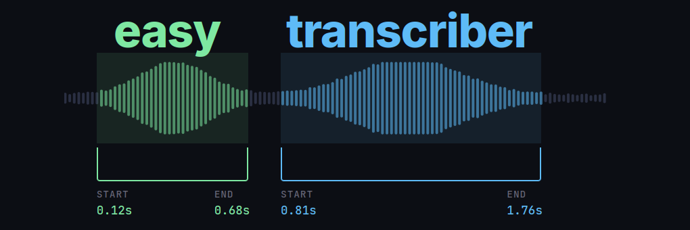
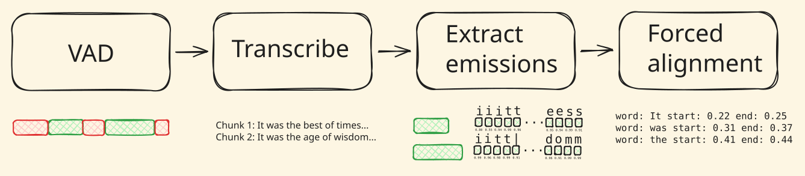

easytranscriber is an automatic speech recognition (ASR) library designed for efficient, scalable transcription with accurate word-level timestamps. It has been developed by KBLab at the National Library of Sweden, drawing inspiration from the WhisperX library (Bain et al. 2023).
The National Library of Sweden is currently in the process of mass transcribing millions of hours of archival radio recordings. Accurate transcription tools with the ability to output precise timestamps have been crucial in making our audiovisual collections searchable and navigable.
At scale, small inefficiencies in inference libraries can add up to substantial wasted compute. While most ASR libraries have squeezed every last drop of performance out of the transcription step of their pipelines, the surrounding components (data loading, emission extraction, forced alignment) often leave significant performance gains on the table. easytranscriber addresses several such issues by implementing:
- GPU-accelerated forced alignment using Pytorch’s forced alignment API (Pratap et al. 2024).
- Parallel loading and pre-fetching of audio files, enabling efficient non-blocking data loading and batching.
- Batched inference for wav2vec2 models (emission extraction).
- Flexible regex-based text normalization that improves forced alignment quality. The normalizations are reversible, meaning that the original text can be recovered after alignment.
easytranscriber has support for both ctranslate2 and Hugging Face transformers as backends – bringing the functionality of WhisperX to the Hugging Face ecosystem.
Pipeline
easytranscriber runs four stages in sequence: voice activity detection (VAD), transcription, emission extraction, and forced alignment. The pipeline can be run as a single pipeline() call, or each stage can be run independently for more fine-grained control.
The easytranscriber documentation has a guide for how to use the pipeline stages independently
For VAD, easytranscriber supports both pyannote and silero models. Note that pyannote is a gated model – you need to accept the terms and conditions and authenticate with a Hugging Face access token. silero can be used without authentication.

A list of suitable emission models for different languages can be found in the WhisperX library.
Installation
pip install easytranscriber --extra-index-url https://download.pytorch.org/whl/cu128When installing with uv, PyTorch’s CUDA/CPU version is selected automatically:
uv pip install easytranscriberUsage
The following example downloads and transcribes the first chapter of A Tale of Two Cities from LibriVox:
from pathlib import Path
from easyaligner.text import load_tokenizer
from huggingface_hub import snapshot_download
from easytranscriber.pipelines import pipeline
from easytranscriber.text.normalization import text_normalizer
snapshot_download(
"Lauler/easytranscriber_tutorials",
repo_type="dataset",
local_dir="data/tutorials",
allow_patterns="tale-of-two-cities_short-en/*",
)
tokenizer = load_tokenizer("english")
audio_files = [
file.name for file in
Path("data/tutorials/tale-of-two-cities_short-en").glob("*")
]
pipeline(
vad_model="pyannote",
emissions_model="facebook/wav2vec2-base-960h",
transcription_model="distil-whisper/distil-large-v3.5",
audio_paths=audio_files,
audio_dir="data/tutorials/tale-of-two-cities_short-en",
backend="ct2",
language="en",
tokenizer=tokenizer,
text_normalizer_fn=text_normalizer,
cache_dir="models",
)You can specify any Whisper model on Hugging Face. easytranscriber handles the download and conversion to ctranslate2 format automatically. Hugging Face transformers is also supported as a backend with backend="hf".
Output
easytranscriber outputs a JSON file for each pipeline stage. The final aligned output in output/alignments contains word-level timestamps:
output
├── vad ← SpeechSegments with AudioChunks
├── transcriptions ← + transcribed text per chunk
├── emissions ← + emission file paths (.npy)
└── alignments ← + AlignmentSegments with word timestampsEach alignment segment includes sentence-level and word-level start/end timestamps with confidence scores:
{
"start": 6.553,
"end": 8.474,
"text": "It was the best of times. ",
"score": 0.995,
"words": [
{"text": "It ", "start": 6.553, "end": 6.593, "score": 0.999},
{"text": "was ", "start": 6.673, "end": 6.773, "score": 1.000},
{"text": "the ", "start": 6.853, "end": 6.933, "score": 0.999},
{"text": "best ", "start": 7.013, "end": 7.173, "score": 0.999},
{"text": "of ", "start": 7.273, "end": 7.333, "score": 0.999},
{"text": "times. ","start": 7.394, "end": 8.474, "score": 0.980}
]
}Interactive demo
The word-level timestamps allow for building interactive applications where text is highlighted in sync with the audio. Below is a demo, using the alignment output from the example above. Pressing play will highlight each word as it is spoken. You can also click any sentence to jump to that point in the audio. Dragging the progress bar will scroll the transcript to keep the active sentence in view.
You can find the recording of the audiobook at LibriVox.
Search interface: easysearch
easysearch is a minimal, lightweight, search interface built into easytranscriber for browsing and querying transcription outputs. It indexes the output JSON transcriptions into a SQLite database with full-text search and serves a web UI with the same synchronized audio playback and transcript highlighting shown in the demo above.
pip install easytranscriber[search]
easysearch --alignments-dir output/alignments --audio-dir data/audioThis indexes all alignment JSON files and starts a web server at http://127.0.0.1:8642. On subsequent launches, only new or modified files are re-indexed.
The search uses SQLite FTS5 and supports queries like "exact phrase", prefix*, word1 OR word2, word1 NOT word2, and NEAR(word1 word2, 3). Clicking a search result navigates to the document at the matching timestamp and begins playback with synchronized highlighting.
Benchmarks
The optimizations in easytranscriber result in speedups of \(35\)% to \(102\)% compared to WhisperX, depending on the hardware configuration. The gains are most pronounced on hardware with slower single-core CPU performance. WhisperX’s single-threaded data loading and forced alignment implementations become bottlenecks that leave the GPU underutilized. easytranscriber, in contrast, manages to saturate the GPU by loading, prefetching and processing data in parallel.
GPU based forced alignment further minimizes idle time and dependence on single-core CPU performance.
{kind=link}
See the easytranscriber documentation for more details on the benchmarks and hardware configurations.
Documentation and source code
Visit easytranscriber’s documentation website for detailed guides, API references and more:
- Documentation: kb-labb.github.io/easytranscriber
- GitHub: github.com/kb-labb/easytranscriber
- PyPI: pypi.org/project/easytranscriber
easytranscriber depends on easyaligner for forced alignment. Stay tuned and follow the KBLab organization for updates on the easyaligner library. Its documentation will be updated in the coming weeks with guides on how to align ground-truth transcripts with audio.
Acknowledgements
easytranscriber draws heavy inspiration from WhisperX (Bain et al. 2023). The forced alignment component is based on Pytorch’s forced alignment API, which implements a GPU-accelerated version of the Viterbi algorithm (Pratap et al. 2024).
Public domain LibriVox recordings are used as tutorial examples.
ctranslate2 and Hugging Face transformers are used as inference backends.
References
Citation
@online{rekathati2026,
author = {Rekathati, Faton},
title = {Easytranscriber: {Speech} Recognition with Precise
Timestamps},
date = {2026-02-26},
url = {https://kb-labb.github.io/posts/2026-02-26-easytranscriber/},
langid = {en}
}